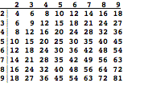
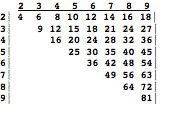

OLPC MEMO-1
Marvin Minsky, Feb
16, 2008 (revised March 22)
This is the first of several memos about
how OLPC could initiate useful projects that then could grow without our
further support—if adopted by groups in our Diaspora.
What makes Mathematics hard to learn? Drawbacks
of Age-Based Segregation
Role Models, Mentors, and Imprimers Why
Projects are better than Subjects
Making Intellectual Communities Why
Classics are better than Textbooks
What makes
Mathematics hard to learn?
Why do some children find Math hard to
learn? I suspect that this is
often caused by starting with the practice and drill of a bunch of skills
called Arithmetic—and instead of promoting inventiveness, we focus on
preventing mistakes. I suspect
that this negative emphasis leads many children not only to dislike Arithmetic,
but also later to become averse to everything else that smells of technology. It might even lead to a long-term
distaste for the use of symbolic representations.
Anecdote: A parent once asked me to tutor
a student who was failing to learn the multiplication table. When the child complained that this was
a big job, I tried to explain that because of diagonal symmetry, there are less
than 50 facts to learn.

½
However, that child had a larger-scale
complaint:
“Last year I had to learn the addition
table and it was really boring. This year I have to learn another, harder one,
and I figure if I learn it then next year there will be another one and
there’ll never be any end to this stupid nonsense. "
This child imagined ‘Math’ to be a
continuous string of mechanical tasks—an unending prospect of practice and
drill. It was hard to convince him
that there would not be any more tables in subsequent years.
To deal with the immediate problem, I made
a deck of “flash cards,” each of which showed two digits on the front and their
product on the back. The process was to guess each answer and, if it was
correct, then to remove that card from the deck. This made the task seem more
like a game in which one can literally feel one’s progress as the size and weight of
the deck diminishes. Shortly the child excitedly said, “This deck is a
really smart teaching machine! It
remembers which products I’ve learned, and then only asks for the ones I don’t
know, so it saves me from wasting a lot of time!”
However, a more serious problem was that
this child had no good image or “cognitive map” of what might result from
learning this subject. What
function might Math serve in later years?
What goals and ambitions might it help to achieve?
Anecdote: I asked a certain 6-year-old
child “how much is 15 and 15”and she quickly answered, “I think it’s 30.” I
asked how she figured that out so fast and she replied, “Well, everyone knows that
16 and 16 is 32, so then I subtracted the extra two 1’s.”
Traditional teacher: “Your answer is right but your method
was wrong: you should add the two 5’s to make a 10; then write down the 0 and
carry the 1, and then add it to the other two 1’s.”
The traditional emphasis on accuracy leads
to weakness of ability to make order-of-magnitude estimates—whereas this
particular child already knew and could use enough powers of 2 to make
approximations that rivaled some adult’s abilities. Why should children learn only “fixed-point” arithmetic,
when “floating point” thinking is usually better for problems of everyday life!
More generally, we need to develop better
ways to answer the questions that kids are afraid to ask, like “What am I
doing here, and why? ”What can I expect to happen next?” or
“Where and when could I find any use for this?
I’ll conclude with a perceptive remark
from MIT’s Phil Sung: “Students are being led to think that they dislike
math when they actually just dislike whatever it is that they're being taught
in math classes.”
Students need
Cognitive Maps of their Subjects
Until the 20th century,
mathematics was mainly composed of Arithmetic, Geometry, Algebra, and Calculus.
Then the fields of Logic and Topology started to rapidly grow, and in the 1950
we saw a great explosion of new ideas about the nature of information and
computation. Today, these new
concepts have become so useful and empowering that our math curriculum is out
of date by a century. We need to find ways to introduce these ideas into our
children’s earlier years.
In the traditional curriculum, Arithmetic
was seen as so absolutely foundational that all other mathematical thinking
depended on it. Accordingly, we
sentenced all our children to two or three year terms of hard labor at doing
addition, multiplication, and division!
However, today it might be better to regard those tasks as little more
than particular examples of algorithms—and this suggests that we could start,
instead, with some simpler and more interesting ones!
For example, we could engage our
children’s early minds with simple examples and ideas about Formal Languages
and Finite State Machines. This
would provide them with thoughtful and interesting ways to think about programs
that they could create with the low-cost computers that they possess. Languages like Logo and Scratch can
help children to experiment not only with simple arithmetic, but also with more
interesting aspects of geometry, physics, math, and linguistics! What’s more, this would also
empower them to apply those ideas to develop their own ideas about graphics,
games, and languages—which in turn could lead them to contribute practical
application that their communities can develop and share.
Similarly in the realm of Geometry, we can
provide young children with interactive graphical programs that can lead them
to observe and explore various sorts of symmetries—and thus begin to grasp the
higher-level ideas that mathematicians call the “Theory of Groups”—which can be
seen as a conceptual basis not only for Arithmetic, but for many aspects of
other subjects. (To see examples
of such things, type “Geometer's
Sketchpad” to Google.)
Similarly in the realm of Physics,
children can have access to programs that simulate the dynamics of structures,
and thus become familiar with such important concepts as stress and strain,
acceleration, momentum, energy—and vibration, damping, and dimensional scaling.
In any case, we need to provide our
children with better cognitive maps of the subjects we want them to learn. I
asked several grade-school teachers how often they actually used long
division. One of them said,
"I use it each year to compute the average grade.” Another teacher claimed to have used it
for filling out tax forms—but couldn’t recall a specific example. But none of them seemed to have clear
images of mathematics as a potential lifetime activity. Here is a simple but striking example
of a case in which a child lacked a cognitive map:
A child was sent to me for tutoring because of failing
a geometry class, and gave this excuse: " I must have been absent on
the day when they explained how to prove a theorem."
No wonder this child was confused—and seemed both
amazed and relieved when I explained that there was no standard way to make
proofs—and that “you have to figure it out for yourself”. One could say that this child simply
wasn’t told the rules of the game he was asked to play. However, this is a very peculiar case
in which the ‘rule’ is that there are no rules! (In fact, automatic
theorem-provers do exist, but I would not recommend their use.)
Bringing
Mathematics to Life
What is mathematics, anyway? I once was in a classroom where some
children were writing LOGO programs.
One program was making colored flowers grow on the screen, and someone
asked if the program was using mathematics. The child replied, “Oh, mathematics isn’t anything special:
it’s just the smart way to understand things.” Here are a few kinds of questions that pupils should ask
about the mathematical concepts we ask them to learn:
Arithmetic: Why does “compound interest’ tend to add
more digits at constant rates? How do populations grow? How does recursion lead
to exponentiation? It is easy to
understand such things when one experiments with computer programs, but not
when a child is constrained to the tedious rate of boring numerical
calculation,
Geometry: How many different ways can you paint 6 colors on the faces
of a cube? Can you envision how to divide a cube into three identical
five-sided objects? We know that
gloves come in left- and right-hand forms—but why are there only two such
versions of things? We all live in a 3-D world, but few people learn good ways
to think about 3-D objects. Shouldn’t this be seen as a handicap?
Logic: If most A’s are B’s, and most B’s are
C’s, does this imply that many A’s must also be C’s? Many adults will give the
wrong answer to this! Is it possible that when John Smith moved from Apple to
Microsoft, this raised the average IQ of both companies? We all try to use
logical arguments, but we also need to learn about the most common mistakes!
Mechanics: What makes a physical structure stronger
when one braces it with triangular struts? That’s because two triangles are
congruent, when their corresponding sides are equal—which means that that
there’s no way to change a triangle’s shape, once the lengths of its sides are
constrained. Today most
children grow into adults without ever having learned to use the basic concept
of “degrees of freedom.”
Statistics: Few mathematical subjects rival
Statistics in the range of its everyday applications. How do effects
accumulate? What kinds of knowledge and experience could help children to make
better generalizations? How should one evaluate evidence? What’s the difference
between correlation and cause?
Every child should learn about the most common forms of biases—and also
about why one needs to be skeptical of anecdotes.
A very few fragments of knowledge about
statistics can illuminate most other subjects. In particular, it seems to me, that we should try to get
children to learn to use the “T-test” method, which is an extremely simple
statistical test, yet, one that handles huge ranges of situations. (To use it,
only needs to know enough about the powers of 2!) Also they should understand using square roots to assess
variations. (You can estimate a square root simply by halving the number of
digits!) Example: Basketball scores often turn out to be number pairs like 103
to 97—which are not statistically significant!
Combinatorics: Consider that, when we teach about
democracy, few pupils ever recognize that, in an electoral-college voting
system, a 26% minority can win an election—and if there are 2 tiers of this,
then a mere 7% minority could win!
How do cultural memes manage to propagate? How does economics work? At what point should we try to teach at least the simplest
aspects of the modern Theory of Games?
Abstract Algebra and Topology: These are considered to be very advanced,
even postgraduate. Yet there are many phenomena that are hard to describe if
one lacks access to those ideas—such as fixed-points, symmetries,
singularities, and other features of dynamic trajectories, all of which appear
in many real-world phenomena. Every large society is a complex organization
that can only be well described by using representations at many different
levels of abstraction—e.g., in terms of person, family, village, town, city,
country, and whole-world economy—and “higher mathematics” has many concepts
that could help to better understand such structures.
How can we encourage children to invent
and carry out more elaborate processes in their heads? Teachers often insist that pupils “show
their work”—which means to make them “write down every step.” This is convenient for making grades,
as well as for diagnosing mistakes, but I suspect that this focus on ‘writing
things down’ could lead to mental slowness and awkwardness, by discouraging
pupils from trying to learn to perform those processes inside their heads—so that
they can use mathematical thinking in ‘real time’. It isn’t merely a matter of speed, but of being able to keep
in mind an adequate set of alternative goals and being able to quickly switch
among different strategies and representations. This suggests that OLPC should promote the development of
programs that help pupils to improve their working memories, and to refine the
ways that they represent things in their minds:
There’s something peculiar about how we
teach math. If you look at each
subject in elementary school—History, English, Social Studies, etc.— you'll see
that each pupil learn hundreds of new words in every term. You learn the names
of many organizations, leaders, and wars; the titles of many books and their
authors; and terms for all sorts of ideas and concepts—thousands of new words
every year.
However, in the case of
school-mathematics, the vocabulary is remarkably small. The children do learn words for various
objects and processes—such as addition, multiplication, fraction, quotient,
divisor, rectangle, parallelogram, and cylinder, equation, variable, function, and graph. But
they learn only a few such terms pr year—which means that in the realm of
mathematics, our children are mentally starved, by having to live in a
“linguistic desert.” It is
hard to think about something until one learns enough terms to express the
important ideas in that area.
Specifically, it isn’t enough just to
learn nouns; one also needs adequate adjectives! What's the word for when you should use addition? It’s when
a phenomenon is linear.
What's the word for when you should use multiplication? That’s when something
is quadratic or bilinear.
How does one describe processes that change suddenly or gradually: one needs terms like discrete and continuous. To talk about similarities, one needs terms like isomorphic and homotopic. Our children all need better ways to talk about,
not only Arithmetic and Geometry, but also vocabularies for the ideas one needs
to think about statistics, logic, and topology. This suggests an opportunity for the OLPC children’s
community: to try set up discussion groups that encourage the everyday use of
mathematical terms—communities in which a child can say “nonlinear” and have
others admire, and not discourage her.
If one tries to learn a substantial skill
without a good conceptual map, one is likely to end up with several collections
of scripts and facts, without good ways to know which of them to use, and
when—or how to find good alternatives when what you tried has failed to
work. But how can our children
acquire such maps? In the times
before our modern schools, most young children mainly learned by being forced
to work on particular jobs, and ended up without very much ‘general’
competence. However, there always
were children who somehow absorbed their supervisors’ knowledge and skills—and
there always were people who knew how to teach the children who were
apprenticed to them.’
I’ll come back to this in another Memo
about the disadvantages of modern age-based classes. Today most education is broader, but apprenticeship itself
now is rare, because few teachers ever have enough time to interact very much
with each of their students: a modern teacher can only do so much. The result is that no one has time to
deal thoroughly questions like “What am I doing here, and why? ”What can I expect to happen next?” or
“Where and when am I likely to use this?
However, now we can open new networks
through which every child can communicate. This means that we can begin to
envision, for each of our children, a competent adult with enough “spare time”
to serve as a mentor or friend to help them develop their projects and skills.
From where will all those new mentors come? Perhaps that problem will solve itself, because our
lifespans are rapidly growing. The
current rate of increasing longevity today is one more year for every four, so;
soon we may have more retired persons than active ones!
Of course, each child will be especially
good at learning particular ways to think—so we’ll also need to develop ways to
match up good “apprenticeship pairs.”
In effect we’ll need to develop “intellectual dating services” for
finding the right persons to emulate!
In any case, no small school r community
can teach all possible subjects, or serve the needs of individuals who
abilities are atypical. If a child develops a specialized interest, it is
unlikely that any local person can be of much help in developing that child’s
special talents and abilities. (Nor can any small community can offer the range
of resources to serve children with limited abilities.) However, with more
global connections, it will be easier to reach others with similar interests,
so that each child can join (or help form) an interactive community that offers
good opportunities.
(Some existing communities will find this
hard to accept, because most cultures have evolved to reward those who thinking
about the same subjects in the same ways as do the rest! This will pose difficult problems for
children who want to acquire new ways to think and do things that their
neighbors and companions don't do—and thus escape or break out of the cultures
in which they were born. To deal
with this, OLPC will need to develop great new skills of diplomacy.)
Actually, I loved arithmetic in school. You had to add up a column of numbers
and this was fun because there were so many different ways to do it. You could
look here and there and notice three 3's and think, “that's almost a 10 so I'll take a 1 off that 7 and make
it a 6 and make that 9 into a 10." But how do you keep from
counting some numbers twice? Well,
you could think: “Now I won’t count any more 3's.” How
many children did these things exactly as they were told to do? Surely not those who became engineers
or mathematicians! For when
you use the same procedure again, there’s little chance to learn anything
new—whereas each new method that you invent will leave you with some new mental
skill (—such as a new way to use your memory).
For example, when you add 6 and 7 and write down a 3,
how do you remember to “carry” a 1? Sometimes I’d mentally put it on my
shoulder. How do you
remember a telephone number? Most
people don’t have too much trouble with remembering a ‘local’ 7-digit number,
but reach for a pen when there’s also an area code. However, you can easily learn to mentally put those three
other digits into your pocket—or in your left ear, if you don’t have a pocket!
Why are so many people averse to Math? Perhaps this often happens because our usual ways to teach arithmetic only insist on
using certain rigid skills, while discouraging each child from trying to invent
new ways to do those things. Indeed,
perhaps we should study this subject when we want to discover ways to teach
aversions to things!
Negative Expertise
There is a popular idea that, in order to understand
something well, it is best to begin by getting things right—because then you'll
never make any mistakes. We tend
to think of knowledge in positive terms—and of experts as people who know
exactly what to do. But one could
argue that much of an expert’s competence stems from having learned to avoid
the most common bugs. How much of what each person
learns has this negative character?
It would be hard for scientists to measure this, because a person’s
knowledge about what not to do
doesn’t overtly show in that individual’s behavior.
This issue is important because it is possible that
our mental accumulations of counterexamples are larger and more powerful than
our collections of instances and examples. If so, then it is also possible that people might learn more
from negative rather than from positive reinforcement? Many educators have been taught that
learning works best when it seems pleasant and enjoyable—but that discounts the
value of experiencing frustrations, failures and disappointments. Besides, many
feelings that we regard as positive (such as beauty, humor, pleasure, and
decisiveness) may result from the censorship of other ideas, inhibition of
competing activities, and the suppression of more ambitious goals (so that,
instead of being positive, those feelings actually may reflect the workings of
unconscious double negatives). See the longer discussions of this in Sections
1-1 and 9-4 of The Emotion Machine. Also see “Introduction to LogoWorks” at web.media.mit.edu/~minsky/papers/Logoworks.html
= Note added 24 March 2008
=
The U.S. Department of Education has issued a 90-page report
proposing 45 improvements in math education. This report makes almost all the
mistakes that I complained about in this memo. Its most emphatic recommendation:
A major goal for K–8 mathematics education
should be proficiency with
fractions
(including decimals, percents, and negative fractions), for such proficiency is
foundational for algebra and, at the present time, seems to be severely
underdeveloped. Proficiency with whole numbers is a necessary precursor for the
study of fractions, as are aspects of measurement and geometry.
The
report says almost nothing about using computers except to suggest that
learning to program may bring some benefits “if students’ programming is
carefully guided by teachers so as to explicitly teach students to achieve
specific mathematical goals.” Warning: the full report is likely to make
your mind throw up. See it at
http://www.ed.gov/about/bdscomm/list/mathpanel/report/final-report.pdf